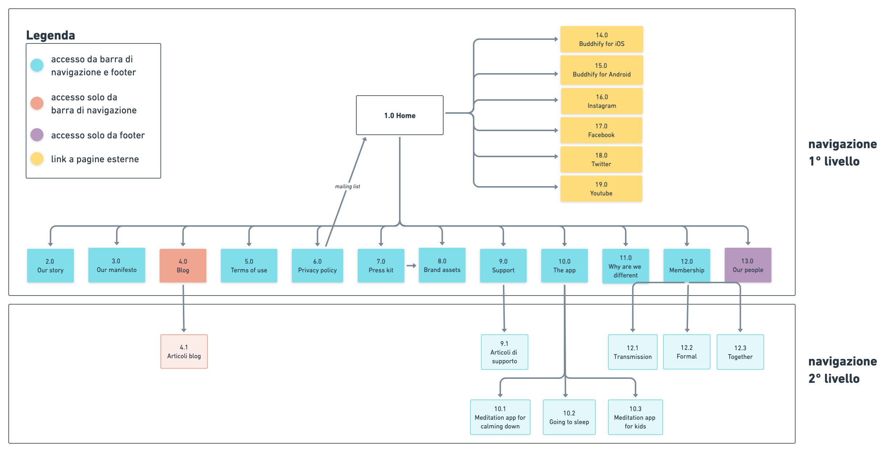
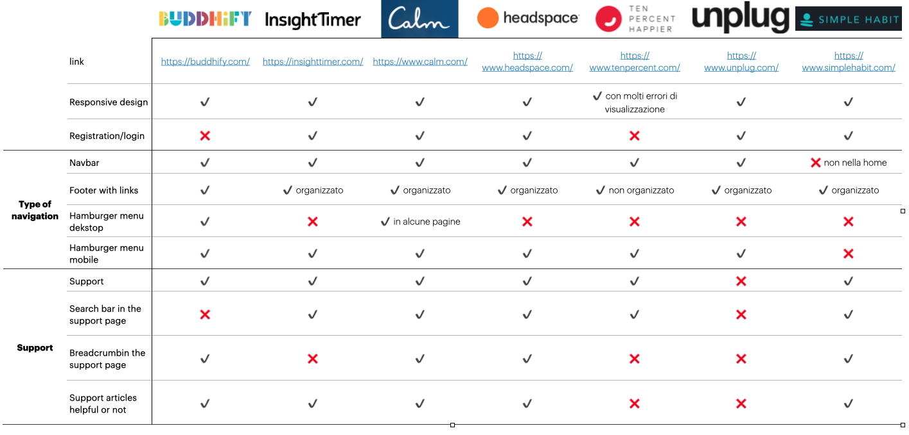
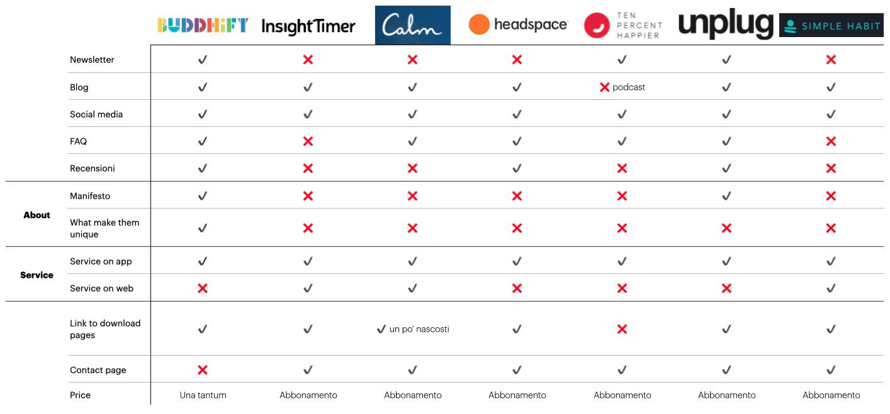
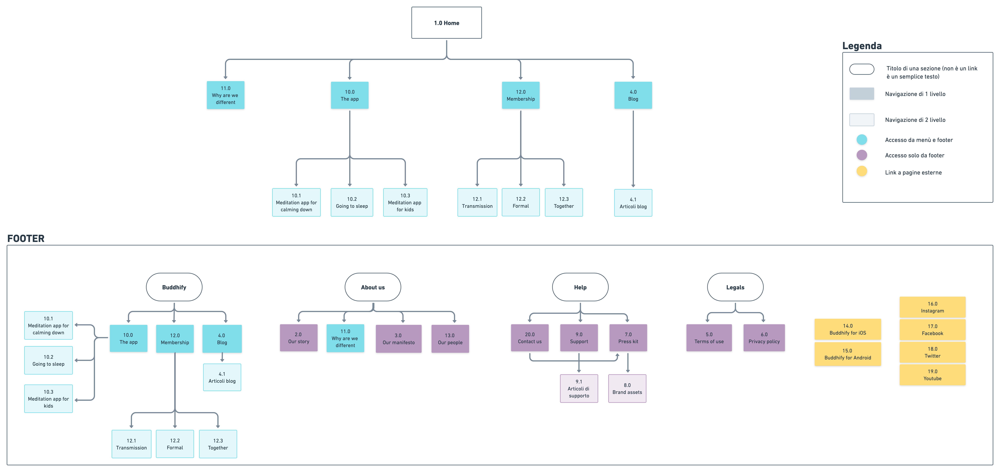

Fase di discovery
a. Descrizione del sito
Il focus del sito web è informativo, perchè il servizio effettivo è erogato unicamente tramite applicazione mobile. Offre quindi informazioni riguardo l'azienda, i suoi valori e servizi, aspetti legali, servizi di supporto all'utilizzo dell'app e un blog.
b. Analisi as is
Ho iniziato con un'analisi as is del sito attuale utilizzando le 10 euristiche di usabilità di Jackob Nielsen, cosi da individuare i requisiti di usabilità, i punti di forza e di debolezza del sito.
Risultati
Ho riscontrato problemi di coerenza e la possibilità di implementare diverse funzionalità per migliorare la navigazione complessiva e la fruizione del sito. Altri interventi possono riguardare la riorganizzazione dei contenuti, così da renderli meno distribuiti e subito visivamente più chiari, ma di questo aspetto per il momento ho scelto di non occuparmene.Sitemap
Per completare l'analisi as is, ho mappato l'architettura dell'informazione del sito attuale
c. Analisi dei competitors
I concorrenti diretti dell'azienda sono tutte le applicazioni di meditazione in commercio in lingua inglese. Ho individuato alcuni dei principali competitors: InsightTimer, Calm, Headspace, Ten percent happier, Unplug e Simple habits. L'obiettivo era fare un benchmark con altre realtà per comprendere le loro scelte, la progettazione dei loro siti, così da valutare come essi hanno risolto determinati problemi e in cosa invece Buddhify si distingue.
Tabella di analisi dei competitors:
 Risultati:
Sono emerse alcune possibili implementazioni del sito:
- Accorpamento delle categorie informative sull'azienda: about us, why we're different, our team e our manifesto
- Creazione di una pagina di contatto, con la presenza di una form così da facilitare il contatto con l'azienda in caso di problematiche
- Implementazione di una barra di ricerca all'interno della pagina di supporto
- Organizzazione dei link del footer per favorire la navigazione del sito
d. Analisi del target
Target del prodotto
Ho prima individuato il target del prodotto, raccogliendo anche testimonianze dai social e dal blog. É emerso che gli utilizzatori sono:
- Persone a cui piace medirare o piacerebbe imparare, ma non sanno da dove partire
- Persone tra i 20 e i 40 anni
- A maggioranza femminile, ma gli uomini non mancano
- Lavoratori, ma ci sono anche studenti
- Alcuni sono genitori che vogliono condividere i momenti di meditazione con i propri figli
- Persone che utilizzano l'applicazione per sopprerire allo stress e all'ansia lavorativa, alcuni per gestire stati emotivi difficili, altri per calmarsi e rilassarsi, altri per acquisire più autostima e stabilità nella vita e chi per dormire meglio
- Persone con una buona comprensione della lingua inglese
Target del sito
Il target del sito invece, non è detto che comprenda per forza gli utenti dell'applicazione. É diretto a persone che:
- si vogliono informare sull'azienda,
- si vogliono informare sull'applicazione,
- necessitano di supporto nell'utilizzo dell'applicazione per dubbi o problemi tecnici,
- si vogliono informare sui post dell'azienda o vogliono condividere le proprie storie.
Ho poi proseguito con un questionario per validare il target e le abitudini di meditazione e alcune preferenze di navigazione. I risultati confermano i criteri del target che già avevo individuato e forniscono un utile spunto di implementazione. All'interno del questionario ho inserito un quesito per determinare le preferenze del target in caso di problemi con l'applicazioni. Le possibilità di scelta erano tra: Form di contatto, pagina di supporto, email e numero di telefono. I risultati maggiori riguardavano i primi due.
e. Personas & user journey
Sulla base dei dati emersi dall'analisi del target e dal questionario ho definito le personas. Per ognuno ho individuato i bisogni, aspettative, ipotizzato uno scenario e mappato il percorso nel sito attuale, user journey, individuando le criticità riscontrate e le opportunità di miglioramento del sito.
1) Emily

Emily
Età: 24Status: Single
Città: Miami
Professione: Giornalista
Livello tecnologico: Alto

Bio: Emily è una ragazza ambiziosa e molto socievole. Fa la giornalista per una rivista femminile. È da sempre appassionata della meditazione, non c’è giorno che salta. Aveva iniziato per imparare a gestire l’ansia quando ancora era una studentessa, ma anche una volta risolto il problema, ha continuato a praticare. Non vede l’ora di raccogliere competenze tali da poter diventare una freelance
Motto: ”Mi piace condividere le mie esperienze e i miei hobby con le altre persone”
Scenario: La rivista per cui lavora le ha dato la possibilità di scrivere un’articolo a piacere e le è venuto in mente di condividere la sua passione per la meditazione, facendo una recensione di Buddhify
Goals:
- Raccogliere informazioni sull'azienda
- Trovare il logo dell'azienda
Frustrazioni:
- Spera di trovare sul sito le informazioni necessarie a poter scrivere il suo articolo
2) Alex

Alex
Età: 31Status: Fidanzato
Città: Berlino
Professione: Manager
Livello tecnologico: Medio
Bio: Alex è un uomo dinamico. Lavora come manager per una grossa azienda ed è spesso soggetto a stress per le troppe responsabilità e i viaggi per lavoro. Da qualche anno si è scaricato sul suo smartphone Android l’applicazione di Buddhify. Gli piace molto meditare mentre torna a casa, lo aiuta a rilassarsi e abbandonare lo stress della giornata lavorativa, cosi da godersi la vita privata in tranquillità.
Motto: ”Medito per dissociarmi dal lavoro e vivere sereno la mia vita privata”
Scenario: Ha sempre utilizzato l’app su un dispositivo Android, ma ha da poco cambiato telefono passando ad un iPhone e vorrebbe capire se può scaricare l’app senza pagarla di nuovo
Goals:
- Continuare ad utilizzare Buddhify sul suo nuovo telefono
Frustrazioni:
- Ha paura di dover riacquistare l’applicazione
3) Abby
Abby
Età: 35Status: Sposata
Città: Londra
Professione: Mamma & impiegata
Livello tecnologico: Medio
Bio: É una donna tranquilla e piena di risorse. Madre di 2 bambini, adora giocare con loro e godersi la loro compagnia. Da qualche mese anche il più piccolo è entrato all’asilo e lei ha ricominciato a lavorare come commessa in un negozio di abbigliamento. Adora la sua vita ma ultimamente è un po’ troppo frenetica. Ogni tanto le piace prendersi una serata di tranquillità, per uscire con le amiche.
Motto: ”Amo la mia vita, ma la tranquillità è come un miraggio”
Scenario: Durante l’ultima uscita con le amiche, Abby ha raccontato di aver bisogno di un po’ di tranquillità. Una delle sue amiche le consiglia Buddhify, dicendole che la utilizza anche con i suoi figli. Abby è colpita, si segna il nome dell’app e quando torna a casa decide di fare qualche ricerca online
Goals:
- Avere qualche momento di tranquillità nell’arco della giornata Trovare il logo dell’azienda
Frustrazioni:
- Ha volte ha paura di non riuscire a gestire tutto quanto
- Non vuole togliere del tempo ai figli, sa che cresceranno in fretta e che ogni momento è prezioso
f. Implementazioni
Tra la fase di analisi del sito e le user journey sono emersi le seguenti possibilità di implementazione:
- Rimosso il menù ad hamburger per la visualizzazione da desktop. La visualizzazione da tablet e da mobile lo comprende ancora, ma con la nuova configurazione.
- La pagina “Support” è stata aggiunta alla barra di navigazione/menù ad hamburger ➡️ la barra di navigazione/menù ad hamburger comprende quindi: “About us” , “The app”, “Membership”, “Blog”, “Support”. Il restante delle pagine compare unicamente nel footer
- Il footer è stato riorganizzato in 4 categorie di contenuti:
- Buddhify che comprende: “The app”, “Membership” e “Blog”
- About us che comprende: “Why we’re different”, “Our story”, “Our people”, “Our manifesto”
- Help che comprende: “Support”, “Contact us” e “Press kit”
- Legals che comprende: “Terms of use” e “Privacy policy"
- È stata inserita la pagina “Contact us” che comprende una form di contatto con nome, motivo di contatto (scelto tramite finestra dropdown e che indirizza l’utente in automatico alla mail giusta) e campo di testo. La pagina inoltre comprende il numero di telefono, una FAQ con le domande più frequenti e i link alle pagine “Support” e “Press kit” ➡️ tutti i link alle mail presenti nel sito sono sostituiti dal link alla pagina di contatto.
- La pagina “Brand assets” diventa una pagina di navigazione di 2 livello, collegata alla pagina di primo livello “Press kit”
- I link “Buddhify for iOS” e “Buddhify for Android” nel footer sono sostituiti dagli appositi button
- È stato inserito un pulsante di risalita rapida nelle pagine con più testo (come “The app”, le sue sottopagine, ecc.)
- Gli articoli all’interno delle sottopagine di supporto non sono più presentati come un elenco di articoli, ma saranno presenti come accordion, cosi da essere subito interagibili
Nuova sitemap

Wireframing
I wireframe sono stati realizzati su Figma. Ho rappresentato tutte le parti interattive ora o in una versione definitiva in azzurro. Le interazioni possibili sono basiche, saranno poi curate di più in fase di prototype.
Le pagine di cui mi sono occupata sono:
- Home
- Why we're different
- Support di 1° livello
- Support di 2° livello
- Contact

Prototype
I wireframe sono stati ora prototipati. Prima di tutto mi sono occupata di definire la nuova estetica del sito web, ho optato per uno stile che favorisse
- divertimento e gioia, dato dalla moltitudine di colori, scelti per la palette,
- serenità e tranquillità.
a. Palette
La palette è stata sviluppata a partire dal logo, che comprende una moltitudine di colori cosi da conferire energia e allegria al brand.
Ho deciso di mantenere l'identità proponendo una palette di colori che rispetti gli standard del contrasto per l'accessibilità almeno di tipo AA.
#BF3D20
#E86748
#F0A591
#F6C8BC
#7BCB79
#A1D9A0
#C6E8C5
#00828F
#00BDD4
#80DEEA
#B2EBF2
#FFCF42
#FFDC7A
#FFEAAF
#865A90
#B798BE
#D3C0D8
#222222
#B00020
#FFFFFF
*P.S. I colori con il bordo nero sono i colori di base da cui sono state ricavate le sfumature
b. Tipografia
Light, Extralight, Italic, Regular, Medium, Semibold, Bold
Come carattere tipografico ho optato per Poppins, font dalle linee tondeggianti cosi da suscitare un senso di calma e benessere.

User testing
L'ultimo step del progetto riguarda il test del prototipo con l'utente
a. Metodologia & obiettivi
Ho scelto come metodologia un test di usabilità moderato a distanza, da svolgere sul prototipo mobile dato che secondo il Digital 2021: Global overview report circa il 55,7% della navigazione totale è effettuata da dispositivo mobile.
Obiettivi del test
Basandomi sullo scopo del sito e sulle mie implementazioni, gli obiettivi del test, in ordine di importanza, saranno i seguenti:
- Testare la nuova pagina di contatto, dal pdv funzionale e visuale
- Testare le pagine di supporto e nello specifico la fruizione degli articoli di supporto implementati tramite accordion
- Valutare la fruibilità e la nuova estetica delle pagine descrittive e l'attrattività della home
b. Target & reclutamento
Target
Una volta decisa la modalità di test, ho provveduto a ridefinire il target. I requisiti sono:
- tra i 20 e i 40 anni
- principalmente donne
- svolgono la meditazione
- esperienza tecnologica di tutti i livelli
- conoscenza della lingua inglese
I requisiti del target non sono troppo restrittivi, lo scopo è avere una diversità di utenti a cui sottoporre il test,c osi da comprendere come gli utenti più disparati utilizzano e percepisocno le modifiche apportate al sito.
Recruiting
Ho deciso di effettuare il test su 5 utenti, perchè con questo numero di tester si possono scoprire l'85% dei problemi di usabilità più gravi.
Pensavo di optare per un reclutamento dai social media, magari da gruppi Facebook, scegliendo persone che praticano la meditazione anche in altre piattaforme o in autonomia. Per accertarmi che i candidati rispettino i requisiti, somministrerei un questionario online di screeening
c. Script
Il giorno del test inizio con il presentarmi, introdurre all'utente cosa dovrà fare e chiedendogli di pensare a voce alta durante lo svolgimento del test. Preciso subito che essendo un prototipo non tutte le funzionalità sono interagibili. Subito dopo inizio con lo svolgimento effettivo del test, somministrandogli uno per volta gli scenari e i task via chat.
Scenario 1:
Sei un utente dell’applicazione Buddhify. Hai da poco cambiato cellulare, passando da un dispositivo Android a uno iOS (Apple). Stai cercando di scaricare l'applicazione sul nuovo dispositivo ma hai visto che ti viene chiesto di effettuare il pagamento. Trovi strano dover pagare di nuovo, così decidi di approfondire.Task 1 - Apri la pagina di supporto
Task 1b - Leggi l'articolo "How can I add Buddhify to multiple devices"
Task 2 - Contatta l'azienda
Task 2b - Completa il modulo di contatto e invialo
*P.S. Da precisare che presentando lo scenario inizialmente, lascio l'utente libero di procedere. L'utente ha 2 posssibilità di muoversi: tramite la pagina di contatto (task 2) o tramite le pagine di support (task 1). L'ordine dei task è interscambiabile, quindi li somministro a seconda della scelta dell'utente e provvedo poi, solo in un secondo momento, a guidarlo sulla seconda possibilità.
Scenario 2:
Ti chiedo ora di navigare liberamente un paio di pagine, senza fare click. Descrivi però gli elementi che vedi man mano. A cosa possono servire? Per cosa e quando li useresti? Cosa pensi succeda al click?*P.S. Durante la fase di testing pongo domande di follow up per raccogliere informazioni di mio interesse sulle sue abitudini, preferenze, ecc.. a seconda delle situazioni e dei task.
Una volta completato il test porrei le ultime domande di follow up per poi procedere con la somministrazione di un breve questionario che comprende survey quantitative sia NPS che SUS.
d. Risultati del test
Questa fase del progetto è ancora in elaborazione